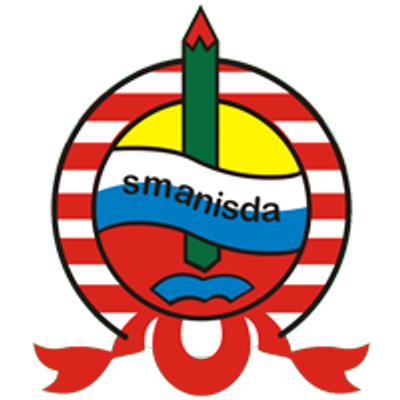

Profil
Keahlian
Pendidikan
Prestasi
Curicculum Vitae with HTML
Muhammad Rolanov Wowor
E-mail: kodokpu@gmail.com
Mobile no : 081334197320
Tentang Saya
Anda bisa panggil saya Olan. Saya lahir di Sidoarjo pada tanggal 28 November 2001. Saat ini saya seorang mahasiswa
Departemen Teknik Informatika di Institut Teknologi Sepuluh Nopember.
Hobi saya sejak kecil adalah bermain game online hingga saat ini fokus ke tingkat kompetitif.
Karena game online inilah saya juga memiliki ketertarikan di bidang Komputer dan Informatika, dan Matematika.
Keahlian
Programming :
- C/C++
- Java
- HTML
- SQL
- Laravel Framework
|
|
|
Jenjang Pendidikan
| SMA NEGERI 1 SIDOARJO (2017-2020)

Jurusan IPA
|
- Anggota ekstrakulikuler musik Virtuoso
- Anggota komunitas eSports SMAN 1 Sidoarjo
- Pendiri komunitas eSports divisi PUBG Mobile SMAN 1 Sidoarjo
- Atlit eSports divisi Dota 2 SMAN 1 Sidoarjo
|
| INSTITUT TEKNOLOGI SEPULUH NOPEMBER (2020- ..)

Departemen Teknik Informatika
|
- GPA 3.66
- Panitia Diesnatalis 62 ITS Sportaiment cabor eSports
- Staff ahli divisi Acara Schematics NLC 2022
- Ketua Divisi Valorant Calon UKM Heroes Day Esports ITS
|
Prestasi
- 2018
- Perempatfinalis Schematics NLC
- 4 besar Dota 2 High School League qualifier by JD.ID
- Juara 1 Smanisda Dota Tournament
- 2019
- 4 besar Dota 2 High School League A season 1 by JD.ID
- 2020
- Juara 3 Point Blank Online Community by Cap Kaki Tiga
- 2021
- Juara 3 Dies Natalis 61 ITS Cabor eSports Valorant
- Juara 2 Electics Tournament FTEIC ITS
|